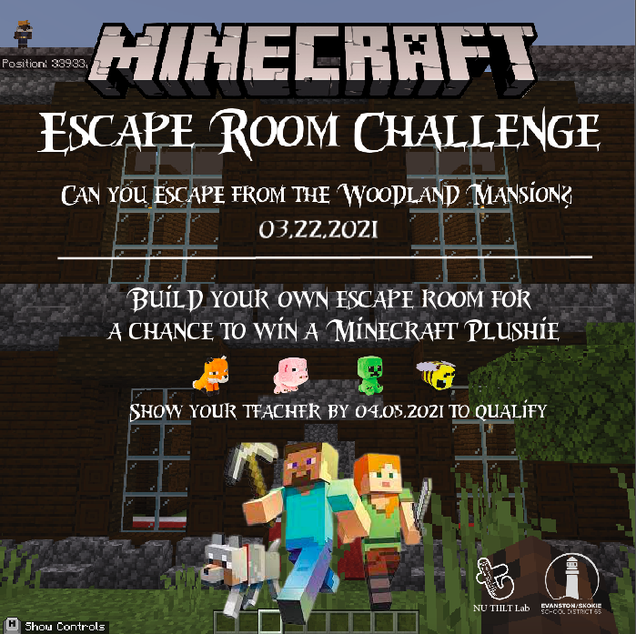
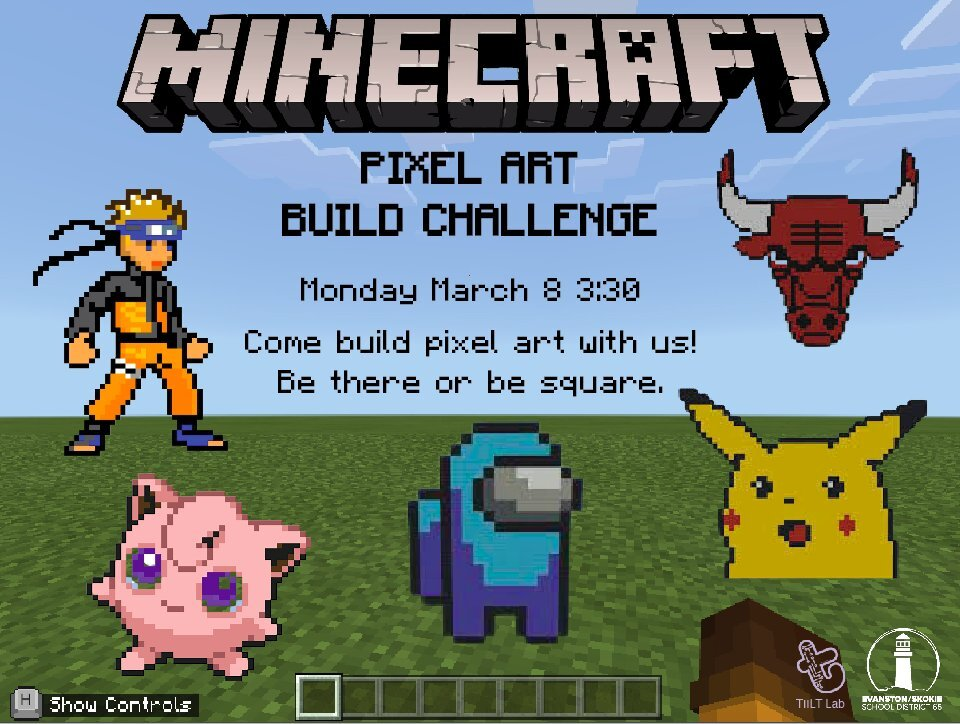
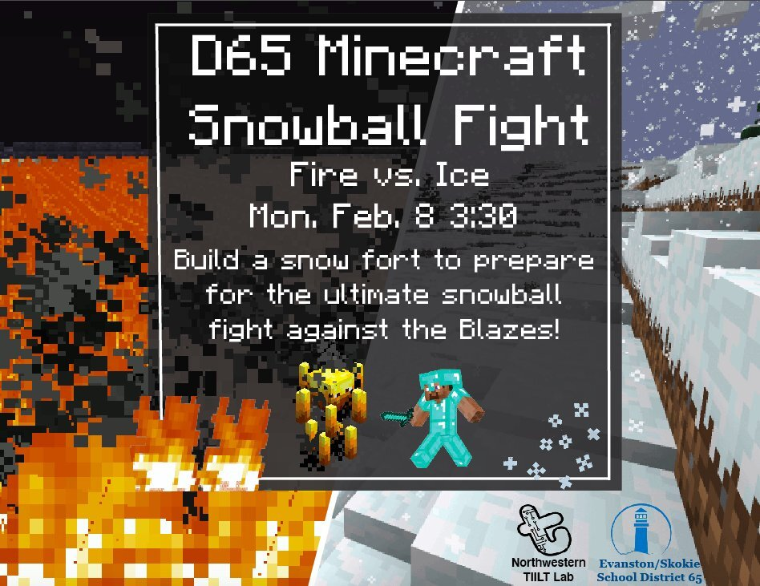
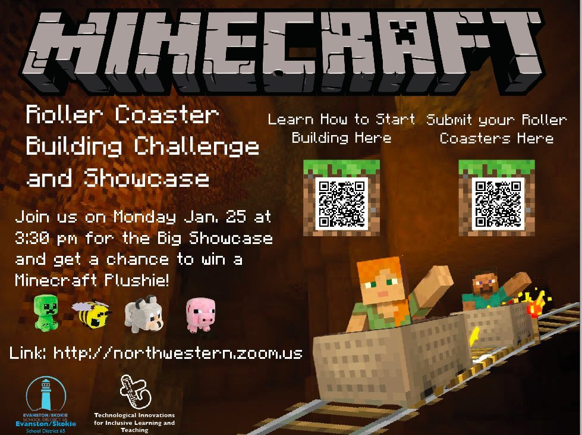

Learning with Minecraft
Many in the media and the academia have touted Minecraft as a hotbed of learning. Learning with Minecraft studies how children might learn spatial reasoning and programming skills within and around the game. We are currently conducting a comparative study of student collaboration under two conditions: 1) Completing a construction task in a traditional Minecraft server; and 2) Using the MakeCode interface in Minecraft Education Edition. Additionally, we are using screen capture and eye tracking technologies to collect data and investigate spatial reasoning processes in Minecraft gameplay.
Past Minecraft Events
Minecraft Escape Room Challenge

Minecraft Pixel Art Build Challenge

D65 Minecraft Snowball Fight

Minecraft Roller Coaster Building Challenge
